Strategiespiele
Zum Verständnis dieses Artikels sind folgende Seiten hilfreich:
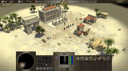
0 A.D.¶
0 A.D.  ist ein Echtzeitstrategiespiel im Stil von Age of Empires.
ist ein Echtzeitstrategiespiel im Stil von Age of Empires.
Kurzbeschreibung: Das Spiel deckt die Zeitspanne von 500 v. Chr. bis 500 n. Chr. ab und die wichtigsten Zivilisationen dieser Zeit sind enthalten bzw. sollen zukünftig hinzugefügt werden. Besonderen Wert wird auf die historischen Begebenheiten der Zivilisationen gelegt.
Anmerkung: Aktuell befindet es sich noch in der Entwicklung, bietet aber trotzdem schon einigen Spielspaß und ist seit Ubuntu 12.04 in den Ubuntuquellen verfügbar.
Benötigte Pakete:
0ad (universe, ab Ubuntu 12.04)
 mit apturl
mit apturl
Paketliste zum Kopieren:
sudo apt-get install 0ad
sudo aptitude install 0ad
Weitere Informationen bietet der Artikel zu 0 A.D..
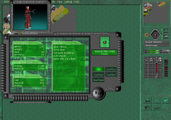
Advanced Strategic Command¶
Advanced Strategic Command ist ein rundenbasiertes Strategiespiel, dass sowohl spielerisch als auch optisch sehr stark an die Battle Isle Serie von Blue Byte angelehnt ist. Die bunte Grafik täuscht - Dies ist ein ausgereiftes Strategiespiel. Es steht ein reichliches Arsenal an Land-, Luft- und Seeeinheiten zur Verfügung, die sich durch Stärke, Panzerung, Reichweite usw. unterscheiden. Nachschub kommt aus Fabriken, die auf der Karte verteilt sind und erobert werden können.
Project Battle Planets - PBP  ist eine deutschsprachige Projektseite zu ASC. Im PBP Forum trifft sich die PBP-Gemeinde. Dort kann eine Teilnahme an PBP oder ein Duell verabredet werden. Gespielt wird per Mailversand.
ist eine deutschsprachige Projektseite zu ASC. Im PBP Forum trifft sich die PBP-Gemeinde. Dort kann eine Teilnahme an PBP oder ein Duell verabredet werden. Gespielt wird per Mailversand.
Anmerkung: Für die Teilnahme an PBP ist die aktuellste Version von ASC erforderlich.
Kurzbeschreibung: Kriegsgerät bauen und mit Taktik und Geschick die Gegner besiegen
Benötigte Pakete:
asc (universe)
mit apturl
Paketliste zum Kopieren:
sudo apt-get install asc
sudo aptitude install asc
Empfohlenes zusätzliches Paket:
asc-music (universe)
mit apturl
Paketliste zum Kopieren:
sudo apt-get install asc-music
sudo aptitude install asc-music
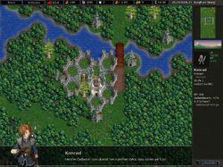
Battle for Wesnoth¶
Battle for Wesnoth oder einfach kurz Wesnoth ist ein rundenbasiertes Strategiespiel. Man kann selbst auch ohne größere Schwierigkeiten eigene Maps und Szenarien erstellen und im Internet mit anderen Spielern spielen.
Kurzbeschreibung: Eine Armee aufbauen und mit ihr zahlreiche Kampagnen bewältigen.
Anmerkung: Wer auf dem offiziellen Server spielen möchte, sollte die neuste Version installieren, gegebenenfalls aus dem Quellcode, da es ansonsten zu Kompatibilitätsproblemen kommt.
Benötigtes Paket:
wesnoth (universe)
mit apturl
Paketliste zum Kopieren:
sudo apt-get install wesnoth
sudo aptitude install wesnoth
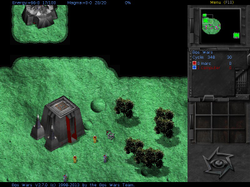
Bos Wars¶
Bos Wars ist ein futuristisches Echtzeit-Strategiespiel. Entwickle dich und eliminiere deine Feinde. Entweder lokal, im Netzwerkspiel oder Internet.
Benötigtes Paket:
boswars (universe)
mit apturl
Paketliste zum Kopieren:
sudo apt-get install boswars
sudo aptitude install boswars
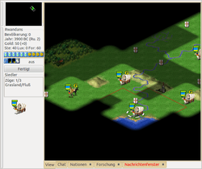
Freeciv¶
Freeciv ist sehr ähnlich zu Civilization 2 von Microprose. Zusätzlich unterstützt es aber auch Mehrspielerpartien, denen man über den integrierten Serverbrowser beitreten kann. In Freeciv führt man eine Nation rundenbasiert über mehrere Jahrtausende mit dem Ziel der Weltherrschaft. Um dies zu erreichen, muss geforscht, gehandelt und auch Krieg geführt werden. Im Gegensatz zu den meisten anderen Strategiespielen ist der zivile Teil (Städtebau, Infrastruktur, Forschung) mindestens so wichtig wie das Militär. Wer schon einen Civilization-Teil kennt, wird sich leicht in diesem Spiel zurechtfinden.
Kurzbeschreibung: Führe Dein Volk von der Steinzeit in die Neuzeit
Benötigte Pakete:
Für Freeciv stehen drei Client-Programme zur Verfügung, von denen aber nur eines installiert werden braucht. Welches man benutzt, ist Geschmackssache.
freeciv-client-gtk (universe, der Standard-Client)
mit apturl
Paketliste zum Kopieren:
sudo apt-get install freeciv-client-gtk
sudo aptitude install freeciv-client-gtk
freeciv-client-sdl (universe, ein Client mit einer an Civilization 3 angelehnte Bedienung)
mit apturl
Paketliste zum Kopieren:
sudo apt-get install freeciv-client-sdl
sudo aptitude install freeciv-client-sdl
freeciv-client-xaw3d (universe, der erste freeciv-Client - nur für Nostalgiker und Puristen)
mit apturl
Paketliste zum Kopieren:
sudo apt-get install freeciv-client-xaw3d
sudo aptitude install freeciv-client-xaw3d
Empfohlenes zusätzliche Paket:
freeciv-sound-standard (universe)
mit apturl
Paketliste zum Kopieren:
sudo apt-get install freeciv-sound-standard
sudo aptitude install freeciv-sound-standard
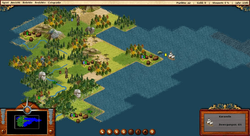
FreeCol¶
FreeCol ist die Umsetzung des Strategiespiels Colonization als Open-Source-Projekt.
Kurzbeschreibung: Der Spieler startet im Jahr 1492 und die Aufgabe besteht darin, Amerika zu besiedeln. Der Handel mit Europa sowie die Beziehung zu den Eingeborenen spielt dabei eine entscheidende Rolle. Anders als in Civilization tritt der militärische Aspekt in den Hintergrund. Ziel ist es, die Unabhängigkeit Amerikas zu erlangen und dabei einen Angriff der königlichen Armee zu bestehen.
Benötigtes Paket:
freecol (universe)
mit apturl
Paketliste zum Kopieren:
sudo apt-get install freecol
sudo aptitude install freecol
Weitere Informationen bietet der Artikel zu FreeCol.
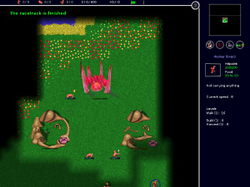
Globulation 2¶
Globulation 2 ist ein Echtzeitstrategiespiel mit indirekter Bedienung
Kurzbeschreibung: In Globulation 2 geht es um das übliche: Gebäude bauen, Ressourcen sammeln und Gegner bekämpfen. Allerdings erteilt man nur Aufträge, was gemacht werden soll - alles andere machen die "Globs", wie die etwas eigenartigen Wesen im Spiel heißen, von alleine - oder eben nicht, wenn sie nicht zufrieden sind!
Benötigtes Paket:
glob2 (universe)
mit apturl
Paketliste zum Kopieren:
sudo apt-get install glob2
sudo aptitude install glob2
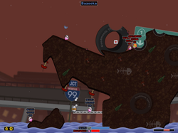
Hedgewars¶
Hedgewars ist ebenfalls wie Warmux ein Worms Klon.
Kurzbeschreibung: Alle gegnerische Teams mit Hilfe der vorhandenen Teammitglieder und Waffen besiegen.
Benötigtes Paket:
hedgewars (universe)
mit apturl
Paketliste zum Kopieren:
sudo apt-get install hedgewars
sudo aptitude install hedgewars
Weitere Informationen bietet der Artikel zu Hedgewars.
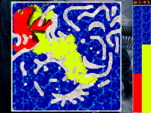
Liquid War¶
Liquid War ist ein völlig neuer Ansatz eines Echtzeitstrategiespiels.
Kurzbeschreibung: Es geht darum, dass sich bis zu 6 "Farbflecken" gegenseitig auffressen. Muss man einfach gesehen haben und dürfte in dieser Form einmalig sein!
Benötigtes Paket:
liquidwar (universe)
mit apturl
Paketliste zum Kopieren:
sudo apt-get install liquidwar
sudo aptitude install liquidwar
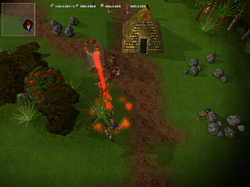
MegaGlest¶
MegaGlest ist ein Open-Source Echtzeit-Strategie-Spiel in einer 3D-Umgebung. Es ist ein Weiterentwicklung des früheren Glest.
Kurzbeschreibung: Es sind sieben Fraktionen vorhanden, menschliche Techniker (Techs), Magier, Ägypter, Indianer, Normannen, Perser und Römer. Durch verschiedene Weiterentwicklungen können die Rüstungen oder die Waffen verbessert werden. Man kann das Spiel entweder alleine gegen einen oder mehrere Computergegner unterschiedlicher Spielstärken (einfach, normal, ultra, mega) spielen, oder mit bis zu acht Leuten im Netzwerk. Das Spiel über's Internet mit anderen oder gegen andere Spieler unter Linux, Windows und OS X ist auch möglich.
Benötigte Pakete:
megaglest (multiverse, ab Ubuntu 12.04)
megaglest-data (multiverse, ab Ubuntu 12.04)
mit apturl
Paketliste zum Kopieren:
sudo apt-get install megaglest megaglest-data
sudo aptitude install megaglest megaglest-data
Links zum Spiel und Infos zu seinem Vorgänger findet man im Artikel Glest.
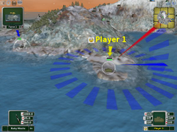
Scorched3D¶
Scorched3D ist ein 3D-Klon des taktikorientierten DOS-Spiels "Scorched Earth" und schöpft seine Stärken im Multiplayer-Modus voll aus. Da die Scorched3D-Community ziemlich groß ist, wird das Spiel ständig weiterentwickelt und ist zu einem Vorzeige-Projekt der Open-Source-Szene geworden (über 2 Mio. Downloads / Stand: Nov.2007).
Weitere Informationen bietet der Artikel zu Scorched3D.
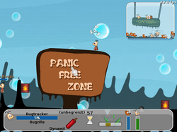
Warmux¶
Warmux (früher: Wormux) ist ein liebevoller Worms Klon mit vielen verschiedenen Karten, Teams und Waffen. Weiterlesen ...
Kurzbeschreibung: Mit Hilfe der vorhandenen Teammitglieder und Waffen alle gegnerische Teams besiegen.
Benötigtes Paket:
warmux (universe)
mit apturl
Paketliste zum Kopieren:
sudo apt-get install warmux
sudo aptitude install warmux
Die Entwicklung liegt leider brach und die aktuelle Version (11.04) weist viele Bugs auf.
Warzone 2100¶
Warzone ist ein Echtzeit-Strategiespiele ähnlich Earth2110. Es enthält eine frei dreh- und zoombare 3D-Umgebung.
Im Vergleich zu anderen Echtzeit-Strategiespiele ist besonders, dass der Spieler selbst Einheiten aus Rumpf, Antrieb und Waffen zusammenstellen muss, da es kaum Vorgabeeinheiten gibt. Während des Spieles kann man sich weiterentwickeln, um neue Rümpfe, Antriebe und Waffen zu erfinden beziehungsweise sie zu entdecken. Außerdem enthält das Spiel eine realistische Artillerie, die weitere taktische Optionen eröffnet.
Weitere Informationen bietet der Artikel zu Warzone 2100.
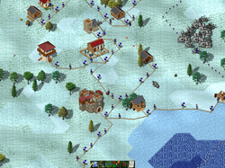
Widelands¶
Widelands ist ein Aufbauspiel, das sich an Siedler II orientiert. Genau wie beim Vorbild muss ein komplexes Wirtschaftssystem unterhalten werden, um letztendlich eine Streitmacht aufzubauen und den Gegner militärisch zu besiegen. Weiterlesen ...
Benötigtes Paket:
widelands (universe)
mit apturl
Paketliste zum Kopieren:
sudo apt-get install widelands
sudo aptitude install widelands
- Erstellt mit Inyoka
-
 2004 – 2017 ubuntuusers.de • Einige Rechte vorbehalten
2004 – 2017 ubuntuusers.de • Einige Rechte vorbehalten
Lizenz • Kontakt • Datenschutz • Impressum • Serverstatus -
Serverhousing gespendet von